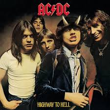

Discografía
Estos son algunos de los álbumes más representativos de esta banda, con enlace directo a YouTube para escuchar el disco completo.
Álbumes Destacados

>High Voltage (1975)
Primer álbum internacional. Define el sonido inicial de AC/DC con riffs eléctricos y la voz rasposa de Bon Scott.
Escuchar en YouTube

Highway to Hell (1979)
Considerado uno de los mejores álbumes de rock de todos los tiempos, incluye clásicos como "Highway to Hell" y "Girls Got Rhythm".
Escuchar en YouTube
Back in Black (1980)
Tributo a Bon Scott con Brian Johnson como nuevo vocalista. Uno de los discos más vendidos de todos los tiempos.
Escuchar en YouTube